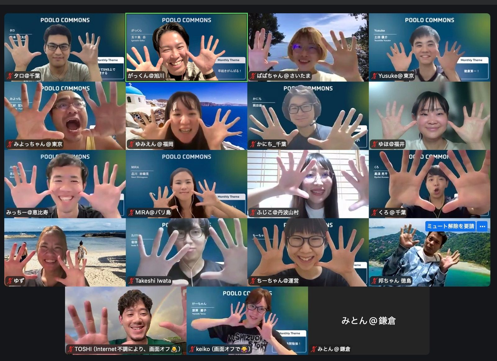
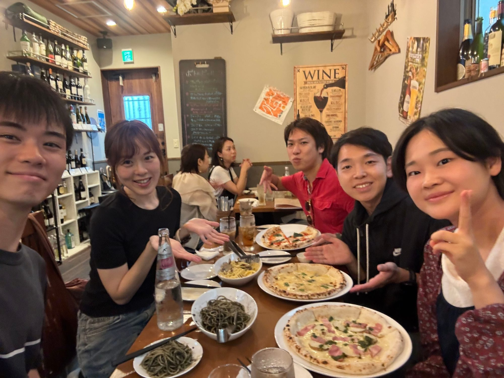
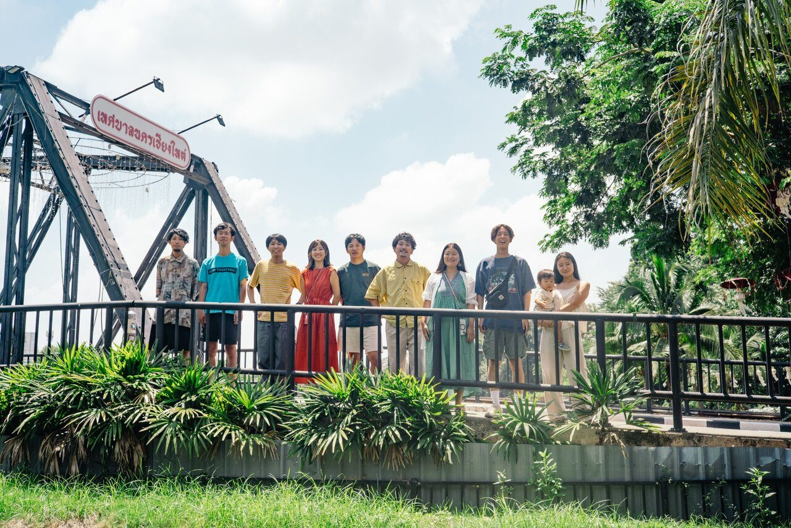

旅好きのオンラインコミュニティ POOLO COMMONSは、2025年11月に始まって、この11月で1年になります。
ふだんはZoomとSlackで会っている仲間と、前にいたメンバーと、その友達と。
毎月ひとつ、やったことのないことに挑戦してきた1年を、顔を合わせて祝う夜です。
東京・恵比寿／参加費3,000円／定員50名
LINEで申し込むCOMMONSのメンバーでなくても参加できます。

2025年11月、最初の定例ミートアップには、52人のうち30人がZoomに集まりました。それから毎月ひとつテーマを決めて、やったことのないことに挑戦してきました。7月はショート動画をつくり、9月は自分の声で音声配信をして、10月は「新しい旅」に挑戦しています。11月のテーマは読書です。
オンラインのコミュニティなので、住んでいる場所はばらばらです。それでも、東京駅に集まってサイコロをふる「ぶらりサイコロ旅」や、朝の皇居ラン、シルバーウィークのご飯会「共通メシ」と、メンバーが自分で立てた企画で、画面の外で会う日が少しずつ増えてきました。
1周年の夜は、その1年をまとめて振り返り、2年目にやることを話す日にします。いまのメンバーも、前にいたメンバーも、まだCOMMONSに入っていない人も来られます。
乾杯のあと、この1年を写真で振り返り、メンバーを表彰して、最後に持ってきた本を交換します。
19:10ごろ／10分
11月の最初の定例から10月の新しい旅まで、メンバーから集めた「この1年のお気に入りの1枚」を流します。会場の壁にも、月ごとに写真を貼っておきます。
 表彰する
表彰する19:20ごろ／30分
この1年の挑戦から、メンバーの投票で表彰します。部門は「いちばん新しかった挑戦」「いちばん人が集まった企画」などを考えています。毎月ひとりずつ選んできた「月間チャレンジャー」も、ここで紹介します。部門は要確認
 交換する
交換する19:50ごろ／30分
11月のテーマが読書なので、旅や人生で影響を受けた本を1冊、包んで持ってきてください。くじで番号を引いたら、その本を持ってきた人を会場で探して、選んだ理由を聞きにいきます。
同じ日の13:00から、オンラインの定例ミートアップもあります。夜だけの参加でも大丈夫です。定例の形式は要確認
開場
受付で本を預かり、名札に「COMMONSに入った月」を書きます。はじめての方は「はじめて」と書いてください。
乾杯
運営のあいさつは短くして、すぐに乾杯します。
歓談
1年分の写真をスライドで見る
COMMONS AWARD
本のプレゼント交換
2年目の発表
運営から、2年目にやることを発表します。続けて、来年やってみたいことを一人ひとつ紙に書いて、壁に貼ります。
集合写真
終了
21:30までは、残って話していけます。会場の利用時間は要確認

本を1冊、中身が見えないように包んで持ってきてください。旅や人生で影響を受けた本でも、最近読んでよかった本でもかまいません。文庫でも写真集でも大丈夫です。

POOLO COMMONSは、旅好きのためのオンラインコミュニティです。「毎月ひとつ、やったことのないことをやる」を掲げて、月ごとのテーマに挑戦したり、メンバー同士で企画を立てて集まったりしています。あたらしい旅の学校POOLOの卒業生が中心ですが、卒業生でない方も参加しています。
参加費は月額3,000円で、いつでも入会・退会できます。1周年の会で気になった方は、12月から参加できます。入会の受付期間は要確認
POOLO COMMONSのページを見る運営：株式会社TABIPPO
参加する方は、POOLO公式LINEからお申し込みください。友達を誘うときは、このページを送ってもらえると助かります。
東京・恵比寿・参加費3,000円・定員50名
LINEで申し込む1. POOLO公式LINEを友だち追加
2. LINE内の案内から1周年パーティーに申し込む